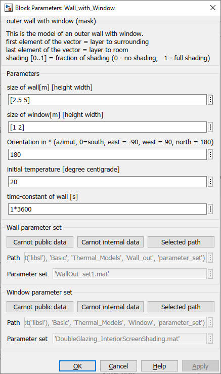

Wall_with_Window
Path:
CARNOT/Basic/Thermal_Models
Purpose:
Outer wall model with a window for houses.
Description:
See wall_out and
window for the model description.
Input:
| WDB | : | Weather Data Bus |
| AIB | : | Air Infiltration Bus from the room node |
| shading | : | shading control of the window (0 = no shading, 1 = full shading) |
Output:
| SbusWall | : | S-bus of the wall to the room node |
| SbusWindow | : | S-bus of the window to the room node |
| TnWall | : | temperature of the nodes in the wall in °C |
Parameters and Dialog Box:

Load the parameter sets of the wall and the window in this mask.
Use the Wall and the
Window model to create new parameter sets.
Examples:
Open the example explorer from the Matlab command window
ExampleBrowser
or load the examples via the CARNOT library.
Characteristics:
| Direct Feedthrough | : | Yes |
| Sample Time | : | Inherited from driving block |
| Vectorized | : | No |